Programmation en C Les appels systèmes, les erreurs et la chaine de compilation
John Samuel
CPE Lyon
Année: 2026-2027
Courriel: john(dot)samuel(at)cpe(dot)fr

John Samuel
CPE Lyon
Année: 2026-2027
Courriel: john(dot)samuel(at)cpe(dot)fr
L'objectif d'une variable constante est de déclarer une valeur immuable qui ne peut pas être modifiée après son initialisation, afin d'assurer l'intégrité des données et de prévenir les erreurs potentielles.
/* Une variable constante
*/
#include <stdio.h>
int main() {
const int année = 2017; // une variable constante
année = 2019; // tentative de modification d'une variable constante
printf("C'est l'annee %d", année);
return 0;
}
Les variables constantes sont des valeurs en lecture seule, et toute tentative de modification de leur valeur après leur initialisation entraîne une erreur de compilation pour préserver leur immutabilité.
$ gcc bonjour.c
const.c: In function ‘main’:
const.c:5:8: error: assignment of read-only variable ‘année’
année = 2019;
#define TAILLE 100 /* texte remplacé, aucun type */
const int taille = 100; /* typé, mais pas une constante :
int t[taille]; est un VLA */
constexpr int MAX = 100; /* C23 : vraie constante typée */
int t[MAX];
const char *p : le caractère est constant. char *const p : c'est le
pointeur. Lisez de droite à gauche.Les variables globales sont visibles et modifiables depuis toutes les fonctions du programme. Il est généralement recommandé de limiter l'utilisation de variables globales et de les utiliser avec précaution pour éviter des effets secondaires indésirables dans un programme complexe.
/* affiche un message à l'écran en utilisant une variable globale
*/
#include <stdio.h>
int année = 2017 // une variable globale;
int main()
{
printf("C'est l'annee %d", année); //affiche 2017
return 0;
}
/* affiche un message à l'écran en utilisant une variable globale */
#include <stdio.h>
int main()
{
printf("C'est l'annee %d", année);
return 0;
}
int année = 2017 // une variable globale;
Dans la fonction main(), l'affichage de la valeur de année est tenté avant sa déclaration et son initialisation, ce qui génère une erreur de compilation. Le compilateur ne sait pas ce qui est tenté d'être affiché avant que la variable année ne soit définie.
$ gcc bonjour.c
bonjour.c: In function ‘main’:
bonjour.c:5:30: error: ‘année’ undeclared (first use in this function)
5 | printf("C'est l'annee %d", année);
| ^~~~
bonjour.c:5:30: note: each undeclared identifier is reported only once for each function it appears in
L'erreur de compilation indique que la variable année n'a pas été déclarée avant son utilisation dans la fonction main().
/* affiche un message à l'écran en utilisant une variable locale */
#include <stdio.h>
int année = 2017 // une variable globale;
int main()
{
int année = 2018 // une variable locale;
printf("C'est l'annee %d", année); //affiche 2018
return 0;
}
/* affiche un message à l'écran en utilisant une variable locale */
#include <stdio.h>
int année = 2017 // une variable globale;
int main()
{
int année = 2018 // une variable locale;
{
int année = 2019 // une variable locale;
printf("C'est l'annee %d", année); //affiche 2019
}
printf("C'est l'annee %d", année); //affiche 2018
return 0;
}
void
echange(
int
a,
int
b
) {
int
temp
= a;
a
= b;
b
= temp;
}
int main()
{
int a = 10, int b = 20;
echange(a, b);
printf("a: %d, b: %d", a, b); //affiche 10, 20
return 0;
}
Il est important de noter que cette fonction effectue un passage par valeur, ce qui signifie que les valeurs originales de a et b ne seront pas modifiées en dehors de la fonction.
void
echange(
int
*a,
int
*b
) {
int
temp
= *a;
*a
= *b;
*b
= temp;
}
int main()
{
int a = 10, int b = 20;
echange(&a, &b);
printf("a: %d, b: %d", a, b); //affiche 20, 10
return 0;
}
Après l'exécution de cette fonction, les valeurs pointées par *a et *b ont été échangées de manière efficace grâce à l'utilisation de pointeurs, et ces modifications sont visibles en dehors de la fonction, car elle utilise le passage par référence.
Le passage par référence d'un tableau est une manière de transmettre un tableau à une fonction en lui fournissant directement une référence (ou un pointeur) vers le tableau d'origine, plutôt que de faire une copie du tableau.
void
affichage(
char
message[10]
) {
printf("%s\n", message);
}
int main()
{
char message[10] =
"Bonjour";
affichage(message);
return 0;
}
Toute modification apportée au tableau à l'intérieur de la fonction affectera également le tableau d'origine en dehors de la fonction.
void
affichage(
char
message[]
) {
message[0] = 'b';
printf("%s\n", message); // affiche "bonjour"
}
int main()
{
char message[10] =
"Bonjour";
affichage(message);
printf("%s\n", message); // affiche "bonjour"
return 0;
}
Lorsqu'un tableau est passé en tant qu'argument à une fonction, il est automatiquement converti en un pointeur vers son premier élément. Cela signifie que char message[] est équivalent à char *message dans le contexte de cette fonction.
void
affichage(
char
*message
) {
printf("%s\n", message);
}
int main()
{
char message[10] =
"Bonjour";
affichage(message);
return 0;
}
void
affichage(
int
tableau[2][2]
) {
for ( int i = 0;
i < 2; i++) {
for ( int j = 0;
j < 2; j++) {
printf("%d\n",
tableau[i][j]);
}
}
}
int main()
{
int prix[2][2] = {{11, 12}, {13, 14}};
affichage(prix);
return 0;
}
void
affichage(
int
tableau[][]
) {
for ( int i = 0;
i < 2; i++) {
for ( int j = 0;
j < 2; j++) {
printf("%d\n",
tableau[i][j]);
}
}
}
int main()
{
int prix[2][2] = {{11, 12}, {13, 14}};
affichage(prix);
return 0;
}
Remarque : L'erreur lors de la compilation est due à la déclaration d'une fonction avec un tableau multidimensionnel sans spécifier la taille de la deuxième dimension.
$ gcc tableau.c
tableau.c:3:21: error: array type has incomplete element type ‘int[]’
3 | void affichage( int tableau[][] ) {
| ^~~~~~~
tableau.c:3:21: note: declaration of ‘tableau’ as multidimensional array must have bounds for all dimensions except the first
tableau.c: In function ‘main’:
tableau.c:15:13: error: type of formal parameter 1 is incomplete
Pour corriger l'erreur, nous avons précisé la taille de la deuxième dimension.
void
affichage(
int
tableau[][2]
) {
for ( int i = 0;
i < 2; i++) {
for ( int j = 0;
j < 2; j++) {
printf("%d\n",
tableau[i][j]);
}
}
}
int main()
{
int prix[2][2] = {{11, 12},{13, 14}};
affichage(prix);
return 0;
}
Pour corriger l'erreur, nous avons utilisé un pointeur vers un tableau à deux dimensions.
void
affichage(
int
(*tableau)[2]
) {
for ( int i = 0;
i < 2; i++) {
for ( int j = 0;
j < 2; j++) {
printf("%d\n",
tableau[i][j]);
}
}
}
int main()
{
int prix[2][2] = {{11, 12}, {13, 14}};
affichage(prix);
return 0;
}
Un pointeur vers un pointeur d'entiers : Un pointeur qui pointe vers un tableau de pointeurs.
void
affichage(
int
**tableau,
int
lignes,
int
colonnes
) {
for ( int i = 0;
i < lignes; i++) {
for ( int j = 0;
j < colonnes; j++) {
printf("%d\n",
tableau[i][j]);
}
}
}
int main()
{
int **prix, lignes, colonnes; ....
affichage(prix,
lignes,
colonnes);
return 0;
}
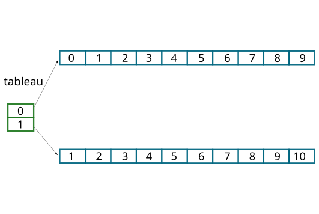
int main()
{
int **tableau, lignes = 2, colonnes = 10;
tableau = calloc(sizeof(int *), lignes);
for ( int i = 0;
i < lignes; i++) {
tableau[i] = calloc(sizeof(int), colonnes);
}
for ( int i = 0;
i < lignes; i++) {
for ( int j = 0;
j < colonnes; j++) {
tableau[i][j] = i+j;
}
}
...
...
affichage(tableau,
lignes,
colonnes);
for ( int i = 0;
i < lignes; i++) {
free(tableau[i]);
}
free(tableau);
return 0;
}
Remarque : Le tableau tableau a été passé par référence à la fonction affichage, de sorte que toute modification apportée à tableau à l'intérieur de cette fonction serait également répercutée sur le tableau d'origine.
Le préprocesseur est la première étape de la compilation : il traite les directives et transforme le code source avant que le compilateur ne commence son travail.
#define PI 3.14159
float aire(
float rayon) {
return(PI * rayon
* rayon);
}
#define PI 3.1415926535
PI est
déjà définie (« If Not DEFined »). Si elle ne l'est pas, la directive
suivante est exécutée.
#include "defs.h"
#ifndef PI // Si PI n'est pas défini
#define PI 3.14159
#endif
float aire(
float rayon) {
return(PI * rayon
* rayon);
}
Comme PI est déjà défini dans "defs.h", la valeur
3.14159 n'est pas utilisée : c'est la définition la plus précise qui reste en vigueur.
Erreur: PI est une macro et non une variable, et il n'est pas modifiable. La tentative de modification de la valeur de PI générera une erreur de compilation, car les macros ne peuvent pas être réassignées.
#include "defs.h"
float aire(
float rayon) {
PI = 3.14;
return(PI * rayon
* rayon);
}
Error: lvalue required as left operand of assignment
PI = 3.14;
^
int
somme(
int,
int);
int
num = 20;
#include
"operators.h" // en-têtes(headers)
#include
"operators.h" // pas d'erreurs
Lorsqu'un fichier d'en-tête contient uniquement des déclarations, il n'y a pas d'erreur si le fichier d'en-tête est inclus plusieurs fois. Les déclarations n'introduisent pas de données réelles en mémoire, elles spécifient simplement le type des fonctions ou des variables.
int
num = 20;
#include
"operators.h" // en-têtes(headers)
#include
"operators.h" // erreur
$ gcc operator.c
note: previous definition of ‘num’ was here
int num=20;
Lorsque le fichier d'en-tête "operators.h" est inclus deux fois, cela entraîne une double inclusion de la définition de la variable num, ce qui n'est pas autorisé en C.
#ifndef __OPERATORS_H__
#define __OPERATORS_H__
int
num = 20;
int
somme(
int,
int);
#endif //__OPERATORS_H__
#include
"operators.h" // en-têtes(headers)
#include
"operators.h" // 2eme fois, mais pas d'erreurs
À la deuxième inclusion, #ifndef __OPERATORS_H__ est faux : le contenu n'est pas inclus une seconde fois, ce qui évite les déclarations multiples.
#ifndef PI
#define PI 3.14159
#endif
#ifndef square
#define square(value) value * value
#endif
float aire(
float rayon) {
return(PI * square(rayon));
}
square(value) est une fonction macro : elle est remplacée par son texte,
value * value.square et
(.
struct couleur1{
unsigned char rouge;
unsigned char vert;
unsigned char bleu;
unsigned int compteur;
};
struct couleur2{
unsigned char rouge;
unsigned int compteur;
unsigned char vert;
unsigned char bleu;
};
printf(
"size- couleur1: %lu, couleur2: %lu\n",
sizeof(
struct
couleur1),
sizeof(
struct
couleur2));
Question: Quel est l'affichage de ce programme?
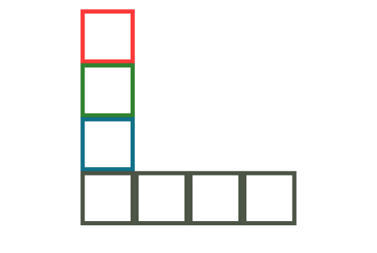
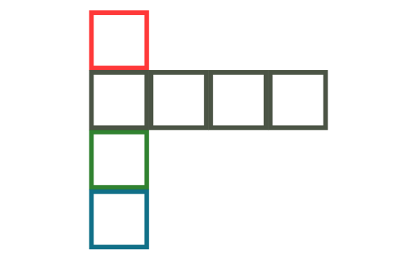
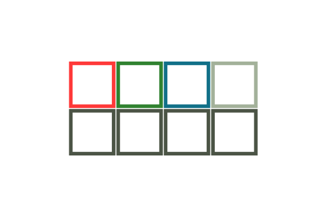
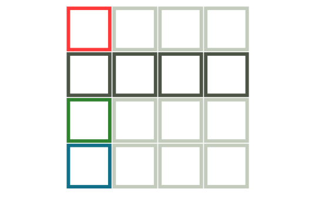
#pragma pack(push)
#pragma pack(1) //alignement d'un octet
struct couleur3{
unsigned char rouge;
unsigned char vert;
unsigned char bleu;
unsigned int compteur;
};
#pragma pack(pop)
printf(
"%lu\n",
sizeof(struct couleur3));
L'utilisation des directives #pragma pack(push) et #pragma pack(1) dans le code vous permet de spécifier un alignement d'un octet pour la structure couleur3. Cela signifie que les membres de la structure ne seront pas alignés de manière traditionnelle, mais plutôt sur un seul octet, ce qui minimise l'utilisation de la mémoire. Remarque: L'affichage de ce programme: 7
struct couleur4{ //alignement de 4 octets
unsigned char rouge;
unsigned char vert;
unsigned char bleu;
unsigned char _pad;
unsigned int compteur;
};
struct couleur5{ //alignement de 4 octets
unsigned char rouge;
unsigned char _pad1[3];
unsigned int compteur;
unsigned char vert;
unsigned char bleu;
unsigned char _pad2[2];
};
alignas(64) unsigned char tampon[256];
printf("%zu\n", alignof(struct paquet));
void *p = aligned_alloc(64, 4096); /* C11 */
free(p);
sizeof en donne la
taille.free.
static_assert(sizeof(struct entete) == 14,
"en-tête BMP mal aligné");
alignas, alignof et static_assert sont des
mots-clés depuis C23 ; en C11 il fallait inclure <stdalign.h> et
<assert.h>.
struct couleur{
unsigned char rouge;
unsigned char vert;
unsigned char bleu;
unsigned int compteur;
};
int main() {
struct couleur c1;
struct couleur *scptr = &c1;
c1.bleu = 0xff;
scptr->bleu = 0x01;
printf(
"c1.bleu: %hhx\n", c1.bleu); //0x01
(*scptr).bleu = 0x22;
printf(
"c1.bleu: %hhx\n", c1.bleu); //0x22
}
scptr->bleu = 0x01
modifie
également le membre bleu, mais à travers le pointeur scptr. Cela équivaut à (*scptr).bleu
=
0x22, ce qui signifie que vous accédez au membre bleu de la
structure
pointée par scptr.
struct couleur *scptr = &c1;
| (*scptr).bleu | scptr->bleu |
L'opérateur -> combine les opérations de déréférencement et d'accès au membre
en
une seule étape. Cela rend le code plus lisible et réduit les risques d'erreurs de déréférencement.
Les
deux notations sont interchangeables.
struct couleur{
unsigned char rouge;
unsigned char vert;
unsigned char bleu;
unsigned int compteur;
};
void change(
struct couleur *c) {
c->bleu = 0x01;
}
int main() {
struct couleur c1;
c1.bleu = 0xff;
change(&c1);
printf(
"c1.bleu: %hhx\n", c1.bleu); //0x01
}
Un membre d'une structure est modifié en utilisant une fonction qui prend un pointeur vers la structure en argument. Cette approche permet de manipuler directement la structure à l'intérieur de la fonction sans avoir besoin de renvoyer la structure modifiée, car les pointeurs permettent de travailler avec la même instance de la structure.
struct couleur{
unsigned char rouge;
unsigned char vert;
unsigned char bleu;
unsigned int compteur;
};
void nochange(
struct couleur c) {
c.bleu = 0x03;
}
int main() {
struct couleur c1;
c1.bleu = 0xff;
nochange(c1);
printf(
"c1.bleu: %hhx\n", c1.bleu); //0xff
}
La fonction 0x03 est censée modifier le membre bleu de la structure c pour lui attribuer la valeur 0x03. Cependant, la fonction est déclarée pour prendre la structure c en tant que copie (par valeur) au lieu d'un pointeur. Par conséquent, lorsqu'elle est appelée dans la fonction main, une copie de la structure c1 est passée à la fonction nochange. Toute modification apportée à cette copie n'affecte pas la structure d'origine.
Une liste simplement chaînée est une structure de données linéaire composée de nœuds, où chaque nœud contient une valeur et une référence (pointeur) vers le nœud suivant. Elle est utilisée pour stocker des éléments de manière séquentielle, offrant une manipulation efficace des données en insérant ou supprimant des éléments en temps constant, mais avec un accès moins efficace aux éléments au milieu de la liste.
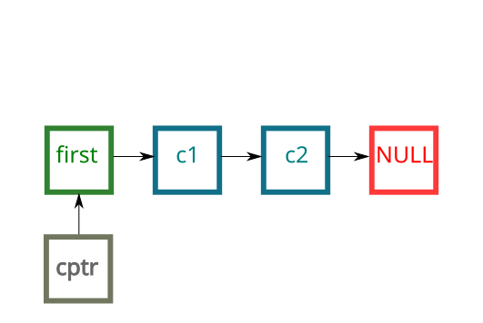
Chaque nœud de la liste contient également un pointeur vers le nœud suivant de la liste, permettant de stocker et de naviguer à travers une séquence de couleurs. Cette structure est souvent utilisée pour représenter une séquence de couleurs dans des applications graphiques ou de traitement d'images.
struct couleur{
unsigned char rouge;
unsigned char vert;
unsigned char bleu;
unsigned int compteur;
struct couleur *next;
};
int main() {
struct couleur first, c1, c2;
struct couleur *cptr;
first.next = &c1;
c1.next = &c2;
c2.next = NULL;
cptr = &first;
while(cptr != NULL) { //navigation
printf(
"cptr->bleu: %hhx\n", cptr->bleu);
cptr = cptr->next; //couleur suivante
}
}
Un pointeur cptr est utilisé pour parcourir la liste, et à chaque étape, la valeur du composant "bleu" de la couleur actuelle est affichée à l'aide de printf. La boucle continue jusqu'à ce que le pointeur atteigne la fin de la liste, ce qui permet de parcourir et d'afficher les composants "bleu" de toutes les couleurs de la liste.
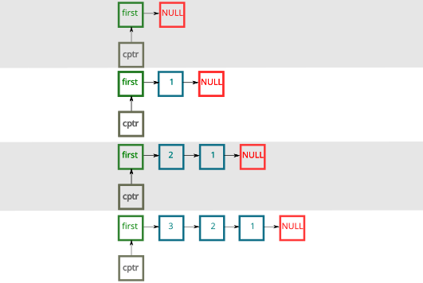
Chaque élément de la liste est représenté par la structure element, qui contient un numéro entier (numero) et un pointeur vers l'élément suivant (suivant). Deux fonctions sont fournies : insertion pour ajouter un nouvel élément à la liste et parcours pour parcourir et afficher les éléments de la liste. Cela permet de construire et de manipuler une liste d'entiers simplement chaînée.
struct element{
unsigned int numero;
struct element *suivant;
};
// insertion d'un élement dans une liste
void insertion(struct element*, int);
// parcours de la liste
void parcours(struct element *);
int main() {
struct element premier;
premier.suivant = NULL;
while(1) {
int numero;
char strnum[50];
fgets(strnum, sizeof(strnum), stdin);
if(strcmp(strnum, "FIN\n") == 0) {
break;
}
sscanf(strnum, "%d\n", &numero);
insertion(&premier, numero);
}
parcours(&premier);
}
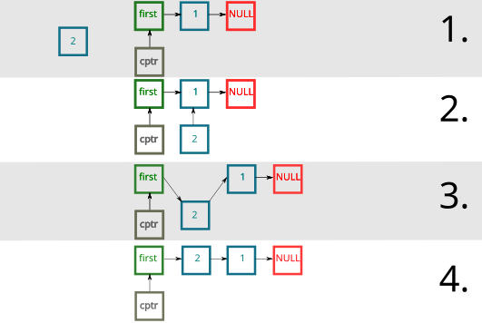
L'objectif de cette fonction est d'insérer un nouvel élément dans une liste chaînée en créant un nouvel élément, en assignant une valeur à ce nouvel élément, et en ajustant les pointeurs pour l'insérer correctement dans la liste existante, ce qui permet de modifier la structure de la liste chaînée.
void insertion(struct element *premier, int numero) {
struct element *nouveau;
nouveau = malloc(sizeof(*nouveau));
nouveau->numero = numero;
nouveau->suivant = premier->suivant;
premier->suivant = nouveau;
}
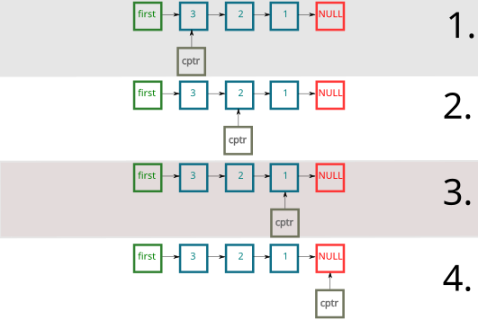
void parcours(struct element *premier) {
struct element *elem = premier;
while(elem != NULL) {
printf("%d\n", elem->numero);
elem = elem->suivant;
}
}
Une liste doublement chaînée a pour objectif de permettre la navigation dans une structure de données linéaire de manière bidirectionnelle, offrant un accès à la fois vers l'élément précédent et l'élément suivant, ce qui facilite l'insertion, la suppression et la recherche efficace des éléments.
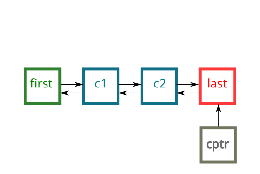
struct couleur{
unsigned char rouge;
unsigned char vert;
unsigned char bleu;
unsigned int compteur;
struct couleur *next;
struct couleur *prev;
};
L'objectif de cette structure de données est de créer une liste doublement chaînée de couleurs, où chaque élément conserve des informations sur la couleur, un compteur, ainsi que des pointeurs vers l'élément précédent et l'élément suivant. Cela permet une navigation bidirectionnelle efficace et des opérations telles que l'insertion et la suppression d'éléments au sein de la liste chaînée.
int main() {
struct couleur first, c1, c2, last;
struct couleur *cptr = &last;
first.next = &c1;
first.prev = NULL;
last.next = NULL;
last.prev = &c2;
c1.next = &c2;
c1.prev = &first;
c2.next = &last;
c2.prev = &c1;
while(cptr != &first) { //navigation
printf(
"cptr->bleu: %hhx\n", cptr->bleu);
cptr = cptr->prev; //couleur précédente
}
}
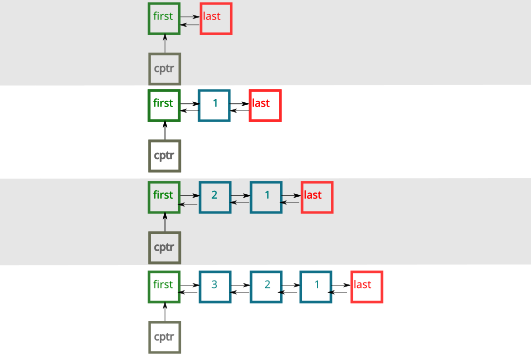
struct element {
int num;
struct element *suivant;
struct element *precedent;
};
struct liste {
struct element premier;
struct element dernier;
};
void insertion_debut(struct liste *, struct element *);
void insertion_fin(struct liste *, struct element *);
void parcourir_debut(struct liste *);
void parcourir_fin(struct liste *);
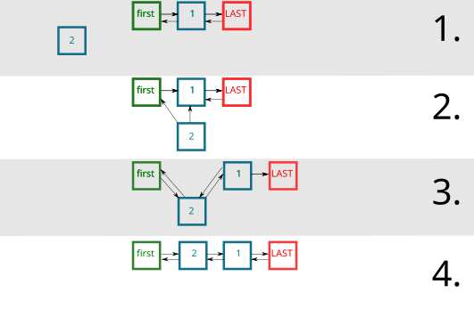
void insertion_debut(struct liste *liste,
struct element *nouveau) {
nouveau->suivant = liste->premier.suivant;
nouveau->precedent = &liste->premier;
liste->premier.suivant->precedent = nouveau;
liste->premier.suivant = nouveau;
}
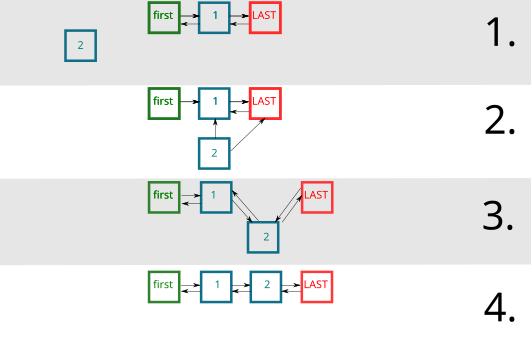
void insertion_fin(struct liste *liste,
struct element *nouveau) {
nouveau->suivant = &liste->dernier;
nouveau->precedent = liste->dernier.precedent;
liste->dernier.precedent->suivant = nouveau;
liste->dernier.precedent = nouveau;
}
void parcourir_debut(struct liste *liste) {
struct element *elem = liste->premier.suivant;
while(elem != &liste->dernier) {
printf("%d\n", elem->num);
elem = elem->suivant;
}
}
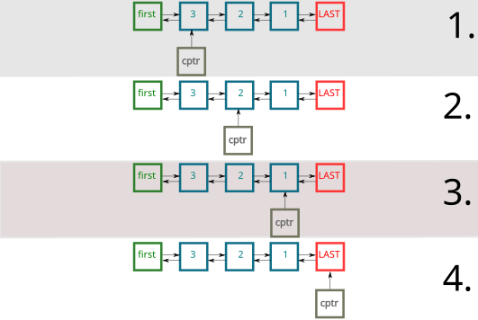
void parcourir_fin(struct liste *liste) {
struct element *elem = liste->dernier.precedent;
while(elem != &liste->premier) {
printf("%d\n", elem->num);
elem = elem->precedent;
}
}
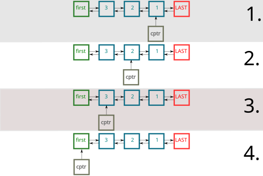
int main() {
struct liste liste;
liste.premier.suivant = &liste.dernier;
liste.dernier.precedent = &liste.premier;
liste.premier.precedent = NULL;
liste.dernier.suivant = NULL;
while (1) {
char strnum[50];
struct element *elem = malloc(sizeof(*elem));
fgets(strnum, sizeof(strnum), stdin);
if(strcmp(strnum, "FIN\n") == 0) {
break;
}
sscanf(strnum, "%d\n", &elem->num);
insertion_fin(&liste, elem);
}
parcourir_debut(&liste);
parcourir_fin(&liste);
}
Les fonctions "add" et "subtract" effectuent des opérations d'addition et de soustraction respectivement.
int
somme(
int
a,
int
b
) {
return
a
+ b;
}
int
soustraction(
int
a,
int
b
) {
return
a
- b;
}
Le pointeur de fonction "func" est utilisé pour sélectionner dynamiquement l'une de ces fonctions en fonction de la valeur de l'opérateur, puis appelle la fonction appropriée pour effectuer le calcul. Dans cet exemple, la fonction "add" est appelée car l'opérateur est '+', affichant "value: 50".
int main() {
int (*func)(int, int); //pointeur de function
char op = '-';
int num1 = 20, num2 = 30;
if (op == '+') {
func = somme;
}
else {
func = soustraction;
}
printf("value: %d\n",func(20, 30));
}
/* Fichier: stats.c
* la taille d'un fichier
* auteur: John Samuel
*/
#include
<stdio.h> // en-têtes(headers)
#include
<sys/types.h>
#include
<sys/stat.h>
#include
<unistd.h>
int main(int argc, char ** argv)
{
struct stat sf;
stat ("./stats.c", &sf);
printf("Taille: %ld octets", sf.st_size);
return 0;
}
#include
<stdio.h> // en-têtes(headers)
#include
<sys/types.h>
#include
<sys/stat.h>
#include
<unistd.h>
#include
<stdlib.h>
int main(int argc, char ** argv)
{
struct stat sf;
int status;
status = stat (argv[1], &sf);
if (status == -1) {
perror("Stats");
return(EXIT_FAILURE);
}
printf("Taille: %ld octets", sf.st_size);
return 0;
}
Le programme utilise la fonction stat pour obtenir des informations sur le fichier spécifié par l'utilisateur. Les informations sont stockées dans la structure struct stat sf. Si la fonction stat échoue, elle renvoie -1, et le programme affiche un message d'erreur à l'aide de perror et se termine avec le code de sortie "EXIT_FAILURE".
$ gcc -o stats stats.c
$./stats stats.c
Taille: ... octets
$ echo $?
0
$ ./stats nostats
Stats: No such file or directory
$ echo $?
1
Le code se termine ensuite avec le code de sortie "1", qui indique généralement qu'une erreur s'est produite pendant l'exécution du programme. Dans ce cas, l'erreur provient du fait que le fichier spécifié en argument n'a pas été trouvé, d'où le message d'erreur "No such file or directory".
L'objectif de la fonction perror dans cet exemple est d'afficher un message d'erreur explicite à l'utilisateur en cas d'échec lors de l'exécution de la fonction stat, en indiquant la nature de l'erreur, comme "No such file or directory" dans le cas d'un fichier introuvable.
#include <sys/types.h>
#include <dirent.h>
#include <unistd.h>
#include <stdlib.h>
#include <stdio.h>
int main(int argc, char **argv) {
if (argc < 2) {
printf("Usage: readdir path\n");
return(EXIT_FAILURE);
}
DIR *dirp = opendir(argv[1]);
if (dirp == NULL) {
perror("opendir");
return(EXIT_FAILURE);
}
struct dirent * ent;
while(1) {
ent = readdir(dirp);
if (ent == NULL) {
break;
}
printf("%s\n", ent->d_name);
}
closedir(dirp);
return(0);
}
Ce programme a pour objectif de lister les fichiers et répertoires d'un répertoire spécifié par l'utilisateur. Le programme utilise une boucle pour parcourir le contenu du répertoire. Il lit chaque entrée (fichiers ou sous-répertoires) du répertoire à l'aide de la fonction readdir. Si la fin du répertoire est atteinte, la boucle s'arrête.
La programmation modulaire est une approche de développement logiciel qui consiste à diviser un programme en modules indépendants, également appelés unités ou composants, chacun responsable d'une fonctionnalité ou d'une tâche spécifique.

L'objectif est de créer un socket client pour établir une connexion avec un serveur distant via le protocole TCP/IP en utilisant le port 8089. Le code configure l'adresse du serveur, crée un socket, et tente de se connecter au serveur distant. En cas d'échec, il affiche un message d'erreur.
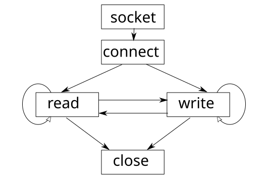
#define PORT 8089
int main() {
int socketfd;
int bind_status;
struct sockaddr_in server_addr, client_addr;
/* Création d'un socket
* AF_INET: Protocoles Internet IPv4
* SOCK_STREAM: flux d'octets bidirectionnels, basés sur la connexion
*/
socketfd = socket(AF_INET, SOCK_STREAM, 0);
if ( socketfd < 0 ) {
perror("Impossible d'ouvrir un socket");
return -1;
}
// détails de l'adresse du serveur
memset(&server_addr, 0, sizeof(server_addr));
server_addr.sin_family = AF_INET;
server_addr.sin_port = htons(PORT);
server_addr.sin_addr.s_addr = INADDR_ANY;
//Se connecter au serveur
int connect_status = connect(socketfd, (struct sockaddr *)
&server_addr, sizeof(server_addr));
if ( connect_status < 0 ) {
perror("Impossible de se connecter au serveur");
return -1;
}
L'objectif est de créer un serveur socket en utilisant le protocole TCP/IP (IPv4), de configurer le serveur pour accepter les connexions entrantes sur un port donné, d'écouter les demandes de connexion des clients et d'accepter ces connexions lorsqu'elles sont établies. Le serveur est configuré pour être capable d'accepter plusieurs connexions de clients en utilisant la fonction accept.
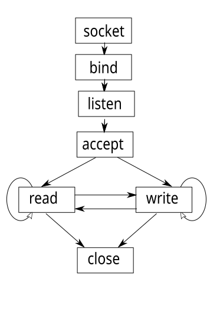
int main() {
int socketfd;
int bind_status;
struct sockaddr_in server_addr, client_addr;
/* Création d'un socket
* AF_INET: Protocoles Internet IPv4
* SOCK_STREAM: flux d'octets bidirectionnels, basés sur la connexion
*/
socketfd = socket(AF_INET, SOCK_STREAM, 0);
if ( socketfd < 0 ) {
perror("Impossible d'ouvrir un socket");
return -1;
}
int option = 1;
setsockopt(socketfd, SOL_SOCKET, SO_REUSEADDR,
&option, sizeof(option));
// détails de l'adresse du serveur
memset(&server_addr, 0, sizeof(server_addr));
server_addr.sin_family = AF_INET;
server_addr.sin_port = htons(PORT);
server_addr.sin_addr.s_addr = INADDR_ANY;
bind_status = bind(socketfd, (struct sockaddr *)
&server_addr, sizeof(server_addr));
if (bind_status < 0 ) {
perror("Impossible de se lier à un socket");
return -1;
}
// Commencez à écouter le socket
listen(socketfd, 10);
char data[1024];
int client_addr_len = sizeof(client_addr);
int client_socket_fd = accept(socketfd,
(struct sockaddr *) &client_addr, &client_addr_len);
if(client_socket_fd < 0 ) {
perror("Impossible d'accepter les demandes des clients");
return -1;
}

Cette étape consiste à traiter les directives de préprocesseur contenues dans le code source, telles que les directives d'inclusion (#include) et de remplacement de macros (#define). Le résultat est généralement un fichier source modifié avec ces directives résolues.
#ifndef PI
#define PI 3.14159
#endif
float aire(
float rayon) {
return(PI * rayon
* rayon);
}
$ gcc -E cercle.c
# 1 "cercle.c"
# 1 "<built-in>"
# 1 "<command-line>"
# 31 "<command-line>"
# 1 "/usr/include/stdc-predef.h" 1 3 4
# 32 "<command-line>" 2
# 1 "cercle.c"
float aire(float rayon) {
return(3.14 * rayon * rayon);
}
Le résultat affiche le code source après le traitement des directives de préprocesseur. Cela peut inclure des inclusions de fichiers, la résolution de macros et d'autres transformations avant la compilation proprement dite.
Ces étapes montrent comment le code source est transformé en diverses représentations intermédiaires avant d'atteindre le code machine final. Chacune de ces étapes permet une analyse et une optimisation du code à différents niveaux.
$ gcc -v bonjour.c # les étapes importantes
$ gcc -save-temps -v bonjour.c # les fichiers *.i, *.s
$ gcc -fdump-tree-all bonjour.c
$ gcc -fdump-rtl-all bonjour.c
Ce code généré montre comment les opérations mathématiques sont exprimées en AST (Abstract Syntax Tree - arbre de syntaxe abstraite).
$ gcc -fdump-tree-all -c cercle.c
$ cat cercle.c.005t.gimple
aire (float rayon)
{
float D.1914;
_1 = (double) rayon;
_2 = _1 * 3.140000000000000124344978758017532527446746826171875e+0;
_3 = (double) rayon;
_4 = _2 * _3;
D.1914 = (float) _4;
return D.1914;
}
$ gcc -O2 bonjour.c
L'option -S indique au compilateur de produire le code assembleur au lieu de générer un exécutable. Le résultat de cette étape est un fichier avec l'extension .s, qui contient le code assembleur généré.
$ gcc -S bonjour.c
$ cat bonjour.s
int main() {
int num = 2 + 3;
return(0);
}
$ gcc -O0 -S somme.c
L'absence d'optimisation (-O0) signifie que le compilateur n'a pas appliqué d'optimisations particulières, ce qui permet d'obtenir un code assembleur directement équivalent au code C source.
main:
.LFB0:
.cfi_startproc
pushq %rbp
.cfi_def_cfa_offset 16
.cfi_offset 6, -16
movq %rsp, %rbp
.cfi_def_cfa_register 6
movl $5, -4(%rbp)
movl $0, %eax
popq %rbp
.cfi_def_cfa 7, 8
ret
.cfi_endproc
int main() {
int num = 2 + 3;
return(0);
}
$ gcc -O2 -S somme.c
somme.s
main:
.LFB0:
.cfi_startproc
xorl %eax, %eax
ret
.cfi_endproc
Compilation (optimisation: 2) : L'optimisation de niveau 2 a permis au compilateur de reconnaître que l'addition 2 + 3 est constante et que la valeur de retour de la fonction est toujours 0. Par conséquent, le calcul inutile est éliminé, ce qui donne un code assembleur très efficace et court. Cette optimisation est typique des optimisations de constantes que le compilateur peut effectuer pour améliorer les performances du code.
$ gcc bonjour.c
$ file a.out
a.out: ELF 64-bit LSB shared object, x86-64
Cela signifie que le programme compilé est conçu pour être exécuté sur une machine d'architecture 64 bits, spécifiquement une architecture x86-64.
Cette commande indique au compilateur GCC de générer un exécutable 32 bits en utilisant l'architecture i686 (Intel 80386). L'option -m32 spécifie que l'exécutable doit être compilé en tant qu'application 32 bits.
$ gcc -march=i686 -m32 bonjour.c
Cette commande est similaire à la précédente, mais elle génère également le code assembleur (-S) pour le programme.
$ gcc -S -march=i686 -m32 bonjour.c
$ file ./a.out
./a.out: ELF 32-bit LSB shared object, Intel 80386
Cette commande compile le fichier source "client.c" en un fichier objet "client.o". L'option -c indique au compilateur de générer uniquement le fichier objet sans produire d'exécutable. Cela permet de diviser le processus de compilation en deux étapes.
$ gcc -c client.c
$ gcc -c color.c
Cette commande prend les fichiers objets "color.o" et "client.o" et les compile en un exécutable nommé "color". Le compilateur lie les fichiers objets pour créer l'exécutable final.
$ gcc -o color color.o client.o
Cette approche est couramment utilisée pour séparer la compilation en plusieurs étapes, ce qui peut être utile dans des projets plus importants où différentes parties du programme sont gérées séparément avant d'être liées ensemble pour former l'exécutable final.
$ gcc -c client.c color.c
$ gcc -o client client.o color.o
$ vim client.c # Modification du fichier
$ gcc -c client.c
$ vim client.c # Modification du fichier
$ gcc -c client.c
$ gcc -o client client.o color.o
L'objectif de cette séquence de commandes est de compiler des fichiers source en fichiers objet, puis de recompiler le programme avec des modifications apportées au fichier source "client.c". Cela permet de mettre à jour le programme en reflétant les changements apportés au code source sans avoir à recompiler entièrement toutes les sources. Cela peut accélérer le processus de développement en évitant de recompiler inutilement les parties du programme qui n'ont pas changé.
$ gcc -std=c17 -O2 -o prog prog.c # production
$ gcc -std=c17 -Og -g -o prog prog.c # déboguable
$ time ./prog
$ perf stat ./prog
$ perf record ./prog && perf report
Remarque : parcourir un tableau à deux dimensions ligne par ligne (l'ordre de rangement en C) au lieu de colonne par colonne peut changer le temps d'exécution d'un facteur important, sans modifier une seule opération.
$ gcc -std=c17 -O3 -fopt-info-vec prog.c
prog.c:14:3: optimized: loop vectorized using 32 byte vectors
-fopt-info-vec-missed dit ce qu'il n'a pas pu vectoriser, et pourquoi.-march=native optimise pour la machine qui compile : le binaire peut ne
pas démarrer ailleurs.
int lire(struct s *p) {
int x = p->a; /* déréférencement */
if (p == NULL) /* ce test peut être supprimé */
return -1;
return x;
}
p n'est pas nul : le test devient inutile.Un comportement indéfini (UB) est une situation pour laquelle la norme n'impose rien : le compilateur a le droit de produire n'importe quoi.
free, ou double libérationLe point essentiel : la sécurité en C consiste d'abord à éliminer les comportements indéfinis.
Ces quatre familles se détectent presque toutes avec AddressSanitizer et valgrind, à condition d'exécuter le code sur les bons cas.
printf(saisie) permet de
lire et d'écrire en mémoire.malloc, fopen,
read et snprintf peuvent échouer ou tronquer.Règle générale : toute donnée venant de l'extérieur est hostile jusqu'à preuve du contraire.
| À éviter | Pourquoi | À utiliser |
|---|---|---|
| gets | aucune borne ; retiré du langage en C11 | fgets |
| strcpy, strcat, sprintf | aucune borne | snprintf |
| scanf("%s", t) | aucune largeur maximale | fgets, ou "%9s" |
| strncpy | ne termine pas la chaîne | snprintf |
Correction importante : strncpy n'est pas une version sûre de strcpy — voir la page suivante.
char dst[8];
/* faux : dst n'est pas terminé par '\0' */
strncpy(dst, "Bonjour tout le monde", sizeof dst);
/* correct : toujours terminé, troncature détectable */
int n = snprintf(dst, sizeof dst, "%s", source);
if (n < 0 || (size_t) n >= sizeof dst)
; /* la chaîne a été tronquée */
strncpy n'écrit pas le '\0' ;
si elle est plus courte, il remplit le reste de zéros.snprintf termine toujours et renvoie la longueur qu'il aurait fallu :
comparez-la à la taille du tampon.strlcpy tronque et termine, mais n'existe que sous BSD et glibc ≥ 2.38.
for (size_t i = n - 1; i >= 0; i--) /* ne se termine jamais */
... /* size_t est non signé */
int et size_t convertit le int en
non signé : une valeur négative devient énorme.-Wconversion, -Wsign-compare, et ckd_mul (C23).
$ gcc -std=c17 -O2 -D_FORTIFY_SOURCE=3 \
-fstack-protector-strong \
-Wformat -Wformat-security \
-fPIE -pie -Wl,-z,relro,-z,now prog.c
memcpy, strcpy,
sprintf... par des versions vérifiées. Nécessite -O1 au
minimum.*** stack smashing detected *** rencontré au chapitre 2.Les règles de codage sont des directives et des conventions qui définissent la manière dont le code doit être écrit pour assurer une lisibilité, une maintenabilité et une sécurité maximale.
free toute mémoire allouée dynamiquement dès qu'elle n'est
plus nécessaire.
$ cat .clang-format
BasedOnStyle: LLVM
IndentWidth: 4
$ clang-format -i src/*.c src/*.h
.clang-format versionné : ce n'est plus un sujet de relecture.Makefile et make créent un exécutable à partir du code source. La dernière heure de modification des fichiers décide de l'exécution ou non des commandes.
$ cat Makefile
client: client.c color.c # création de l'exécutable client
<TAB>gcc -o client client.c color.c
# est un commentaire.<TAB>) : c'est l'action à effectuer pour construire la cible.
$ make
gcc -o client client.c color.c
Le programme "make" lit le fichier Makefile et trouve la règle "client." Il vérifie si les dépendances ("client.c" et "color.c") ont été modifiées depuis la dernière exécution. Si elles l'ont été, ou si l'exécutable "client" n'existe pas, alors "make" exécute l'action spécifiée."make" compile le programme en utilisant GCC, ce qui est indiqué dans le Makefile, et génère l'exécutable "client" en utilisant les fichiers source "client.c" et "color.c."
Remarque : Le Makefile est utile pour automatiser la compilation et la gestion de projets logiciels complexes, en s'assurant que seules les parties modifiées sont recompilées, ce qui permet d'économiser du temps et des ressources.
$ cat Makefile
client: client.o color.o # création de l'exécutable client
gcc -o client client.o color.o
client.o: client.c client.h # compilation
gcc -c client.c
color.o: color.c color.h # compilation
gcc -c color.c
L'objectif du Makefile est d'automatiser le processus de compilation d'un programme appelé "client." Il définit des règles pour créer l'exécutable "client" en compilant les fichiers source "client.c" et "color.c," ainsi que leurs dépendances "client.h" et "color.h" si nécessaire.
L'objectif est de définir des variables pour le compilateur (CC) et les options de compilation (CFLAGS). Il définit également les fichiers objets (COBJS et SOBJS) pour le programme client et serveur, ainsi que les cibles "server" et "client" pour la compilation de ces programmes. Le Makefile permet ainsi de compiler ces programmes en utilisant les règles et les variables prédéfinies.
$ cat Makefile
CC ?= gcc
CFLAGS ?= -Wall -Wextra -g
COBJS ?= client.o color.o
SOBJS ?= server.o color.o
.SUFFIXES: .c .o
SERVER = server
CLIENT = client
all: $(SERVER) $(CLIENT) #création des exécutables
$(SERVER): $(SOBJS) # création de l'exécutable server
$(CC) -o $(SERVER) $(SOBJS)
$(CLIENT): $(COBJS) # création de l'exécutable client
$(CC) -o $(CLIENT) $(COBJS)
.c.o: # Compilation de tous les fichiers
$(CC) -c $*.c
Le Makefile a pour objectif de compiler deux programmes, "server" et "client," en utilisant des fichiers source correspondants. La règle "all" indique que les cibles "server" et "client" doivent être construites. Pour construire ces cibles, le Makefile utilise les fichiers objets "SOBJS" et "COBJS" respectivement. Enfin, la règle ".c.o" définit comment compiler tous les fichiers source en fichiers objets en utilisant le compilateur "CC."
$ vim server.c # Modification du fichier
$ vim client.c # Modification du fichier
$ vim color.c # Modification du fichier
$ make # Compilation de tous les fichiers et création d'un exécutable.
$ vim color.c # Modification du fichier
$ make # Compilation d'un seul fichier (color.c) et création d'un exécutable.
$ make # Ni compilation ni création d'un nouveau exécutable car aucun fichier n'a été modifié
Remarque : Lorsque vous exécutez make une troisième fois, il constate que aucun fichier n'a été modifié depuis la dernière compilation, donc aucune compilation n'est effectuée, et aucun nouvel exécutable n'est créé. Cette étape est importante pour économiser du temps et des ressources lors du développement de logiciels, car seuls les fichiers pertinents sont recompilés.
CC = gcc
CFLAGS = -std=c17 -Wall -Wextra -pedantic -g
OBJS = client.o color.o
client: $(OBJS)
$(CC) $(CFLAGS) -o $@ $^
%.o: %.c
$(CC) $(CFLAGS) -c $< -o $@
CFLAGS += -MMD -MP
DEPS = $(OBJS:.o=.d)
-include $(DEPS)
.h n'est pas listé comme
dépendance, le modifier ne déclenche aucune recompilation et l'exécutable mélange des versions
incompatibles..d listant tous les en-têtes
réellement inclus ; -include les fait lire par make.make clean.
CC = gcc
STD = -std=c17
WARN = -Wall -Wextra -pedantic
SANITIZE = -fsanitize=address,undefined
CFLAGS = $(STD) $(WARN) -g -MMD -MP
SRCS = $(wildcard src/*.c)
OBJS = $(SRCS:.c=.o)
DEPS = $(OBJS:.o=.d)
all: programme
programme: $(OBJS)
$(CC) $(CFLAGS) -o $@ $^
check:
$(MAKE) clean
$(MAKE) CFLAGS="$(CFLAGS) $(SANITIZE)" \
LDFLAGS="$(SANITIZE)"
./programme
format:
clang-format -i src/*.c src/*.h
clean:
rm -f $(OBJS) $(DEPS) programme
.PHONY: all check format clean
-include $(DEPS)
make compile, make check recompile avec les sanitizers et exécute,
make format normalise le style, make clean repart de zéro.
$ bear -- make # produit compile_commands.json
$ clang-format -i src/*.c # met en forme
$ clang-tidy src/*.c # analyse statique
$ git diff # ce qui a changé depuis hier
bear -- make le produit depuis un
Makefile, CMake avec -DCMAKE_EXPORT_COMPILE_COMMANDS=ON.
cmake_minimum_required(VERSION 3.20)
project(progc C)
set(CMAKE_C_STANDARD 17)
set(CMAKE_EXPORT_COMPILE_COMMANDS ON)
add_executable(programme src/main.c src/color.c)
target_compile_options(programme PRIVATE -Wall -Wextra)
cmake -B build puis cmake --build build).
name: build
on: [push, pull_request]
jobs:
build:
runs-on: ubuntu-latest
strategy:
matrix:
cc: [gcc, clang]
steps:
- uses: actions/checkout@v4
- run: $CC -std=c17 -Wall -Wextra -Werror
-fsanitize=address,undefined -o prog src/*.c
env: { CC: "${{ matrix.cc }}" }
À chaque envoi, la machine recompile avec deux compilateurs, les avertissements en erreurs et les sanitizers activés. La règle est appliquée par l'outil, pas par la bonne volonté du relecteur.
FROM ubuntu:24.04
RUN apt-get update && apt-get install -y \
gcc clang make cmake gdb valgrind \
clang-tidy clang-format cppcheck bear
README.md du TP.La question de ce chapitre n'est pas « faut-il les utiliser » : ils font partie de l'environnement professionnel. La question est : que doit garantir le développeur, et comment ?
Ce que ces outils font bien : la syntaxe, les idiomes de la bibliothèque standard, le code répétitif, l'explication et la traduction de code existant.
Ce qu'ils font mal — et c'est précisément la difficulté du C :
Conséquence : dans un langage sûr, un modèle qui se trompe produit une erreur visible. En C, il produit une faille. C'est exactement là que le développeur C reste nécessaire — et c'est ce que ce cours vous apprend à faire.
malloc, fopen ou read non
vérifiée.return
anticipés.sizeof(pointeur) utilisé comme si c'était la taille du tableau.<= au lieu de <, ou pas de place pour le
'\0'.strncpy présenté comme la version sûre de strcpy : l'erreur la
plus reproduite.scanf("%s", tampon) sans largeur maximale.n * sizeof(x) passé à malloc sans vérifier le débordement.%d pour un size_t.Proposition d'un assistant : « écris une fonction qui lit une ligne et en renvoie une copie ». Ce code compile sans erreur.
char *copier_ligne(FILE *f)
{
char tampon[128];
char *copie = malloc(strlen(tampon));
fgets(tampon, sizeof(tampon), f);
strncpy(copie, tampon, strlen(tampon));
return copie;
}
Question : combien d'erreurs voyez-vous, et laquelle est la plus grave ? Prenez cinq minutes avant la page suivante.
strlen(tampon) est appelé avant que tampon ne contienne quoi
que ce soit : comportement indéfini, taille absurde.malloc n'est pas vérifié.'\0' : il faut n + 1.fgets n'est pas vérifié.strncpy copie les caractères sans le '\0' : la chaîne
renvoyée n'est pas terminée.Le point important : aucune de ces six erreurs n'empêche la compilation.
/* Renvoie une copie allouée de la ligne lue, ou NULL.
L'appelant doit libérer le résultat avec free(). */
char *copier_ligne(FILE *f)
{
char tampon[128];
if (fgets(tampon, sizeof tampon, f) == NULL)
return NULL;
size_t n = strlen(tampon);
char *copie = malloc(n + 1);
if (copie == NULL)
return NULL;
memcpy(copie, tampon, n + 1); /* '\0' compris */
return copie;
}
-Wall -Wextra -pedantic -Werror. Zéro
avertissement.-fsanitize=address,undefined, sur les cas limites
autant que sur les données réelles.man 3 : arguments, valeur de retour,
conditions d'erreur.La formule à retenir : le compilateur et les sanitizers sont vos relecteurs. L'assistant est un collègue rapide qui n'exécute jamais son code.
Trop vague :
« écris une fonction qui copie une chaîne »
Utilisable :
« en C17, une fonction qui renvoie une copie allouée
d'une chaîne ; l'appelant libère ; renvoie NULL si
l'allocation échoue ; aucun avertissement avec
-Wall -Wextra -pedantic ; cible Linux/glibc. »
La compétence durable : savoir ce que la norme garantit et ce qu'elle ne garantit pas. C'est précisément ce qu'aucun modèle ne peut garantir à votre place.